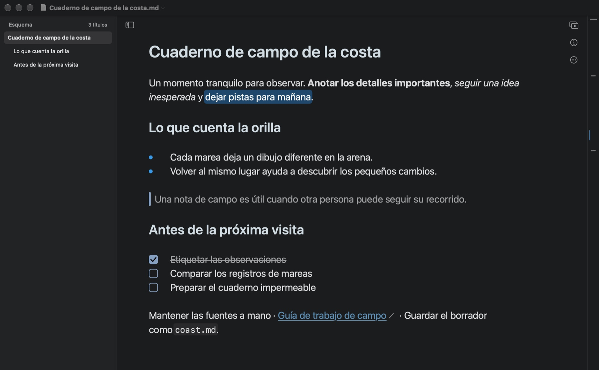
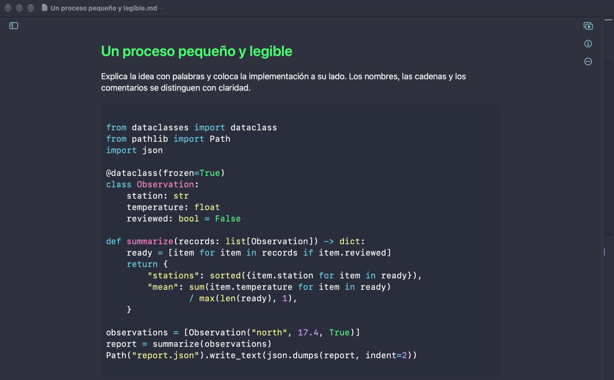
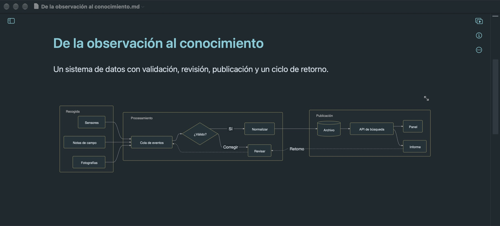
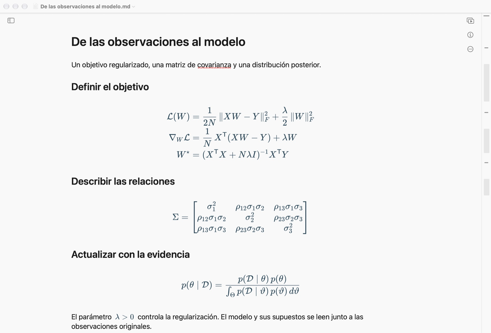
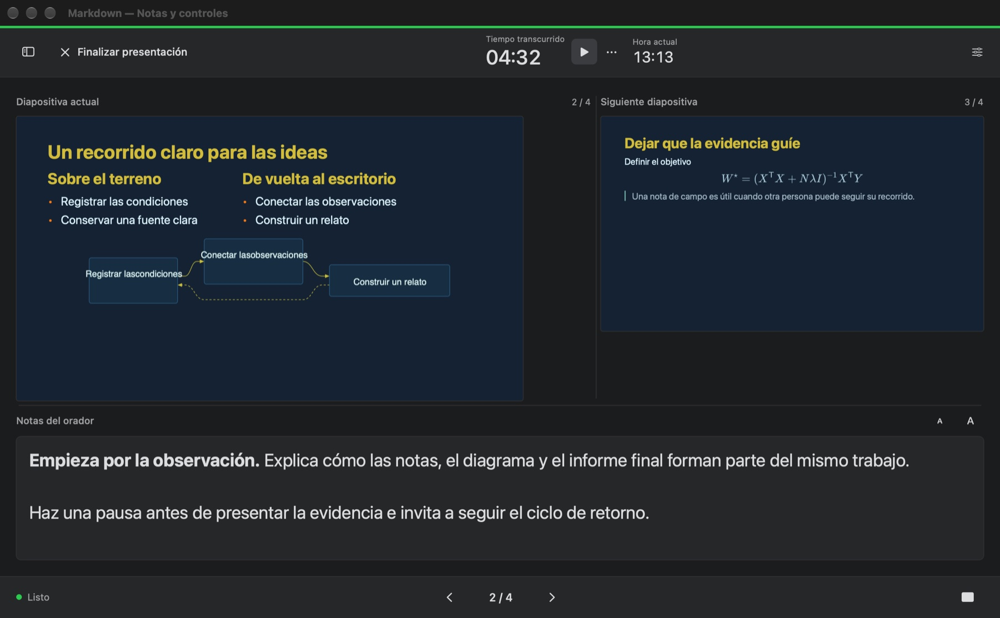

Encuentra el hilo
Salta entre títulos, oriéntate con el minimapa y haz cambios en todo el documento con buscar y reemplazar.
Un lugar natural para tus ideas. En Mac.
Desarrolla el argumento. Dibuja las conexiones. Explica las fórmulas. Después, convierte el mismo documento en una presentación.
macOS 14 o posterior · Lanzamiento en el Mac App Store en preparación

Toda una idea en la misma página
Desde el primer esquema hasta una propuesta técnica, mantén las palabras junto a lo que las explica. Títulos, tablas, listas y código toman forma mientras escribes.
Resaltado según el lenguaje y explicaciones junto al código. Propuestas técnicas, depuraciones y tutoriales, más fáciles de leer.

Describe grupos, ramificaciones y bucles de retroalimentación con Mermaid. Cambia el texto y el diagrama se actualiza.

Fórmulas en línea dentro de la frase y ecuaciones de varias líneas paso a paso. Matrices, integrales y desarrollos, nítidos.

Salta entre títulos, oriéntate con el minimapa y haz cambios en todo el documento con buscar y reemplazar.
Abre y guarda archivos Markdown corrientes en la carpeta que elijas. La edición básica no necesita una cuenta.
Exporta documentos como PDF, HTML, Markdown o texto sin formato. Pro añade más formatos.
De la página a tu público
Añade saltos de página para organizar las diapositivas, previsualízalas junto al texto y presenta a pantalla completa. Pro incorpora una vista del presentador con notas, la siguiente diapositiva y un temporizador.

Empieza con lo esencial. Amplía con Pro.
Funciones esenciales gratis
Compra única · En familia
Compra desde la app. El App Store muestra el precio de tu región antes de confirmar. Sin suscripción periódica.
Una mano cuando la necesitas
Si necesitas ayuda con documentos, exportaciones o una compra, escribe al desarrollador. Incluye las versiones de macOS y de la app, y los pasos que provocaron el problema. Envía solo archivos de ejemplo que quieras compartir.
entropysniper@gmail.com
Abre un archivo .md del Mac o crea uno nuevo en la app y guárdalo en la carpeta que elijas. Si no puedes acceder a una carpeta o un adjunto, comprueba su ubicación y concede acceso cuando macOS lo solicite. Mantén una copia de seguridad de los archivos importantes.
Inicia sesión en el Mac App Store con la Cuenta de Apple que usaste para comprarlo. En Markdown, abre Ajustes → Pro y elige Restaurar compras. Conéctate a Internet y completa cualquier solicitud de inicio de sesión de Apple. Si sigues sin acceso, envía el mensaje de error a soporte.
Markdown Pro es una compra única dentro de la app, no consumible y con En familia activado. Los familiares que cumplan los requisitos pueden usarla mediante los ajustes de En familia de Apple. El App Store muestra el precio y las condiciones antes del pago.
La escritura local y el contenido guardado en el Mac funcionan sin conexión. Las imágenes remotas, vistas previas de enlaces, compras y restauraciones pueden necesitar Internet. Los archivos de otro servicio en la nube dependen de la disponibilidad de ese servicio.
Exportar un documento a PDF es gratis. Exportar una presentación a PDF o PowerPoint requiere Pro. Pro también añade Word, RTF, ePub, imágenes y TextBundle.
Apple gestiona los pagos del App Store. Si no reconoces un cargo o quieres solicitar un reembolso, usa el servicio de Apple para informar de un problema. El desarrollador no puede ver los datos de tu tarjeta ni la contraseña de tu Cuenta de Apple.
Tu trabajo sigue siendo tuyo
Actualizada el 7 de noviembre de 2026
Esta política se aplica a la app Markdown para macOS y a este sitio del producto. Para consultas de privacidad o soporte, contacta con el desarrollador en entropysniper@gmail.com.
Markdown abre y guarda los archivos que elijas en tu Mac. El desarrollador no recibe tus documentos, nombres de archivo, actividad de escritura ni preferencias. La app no incluye registro de cuentas, publicidad ni SDK de analítica. Si guardas archivos en una carpeta sincronizada por otro servicio, se aplican sus ajustes y su política.
Un documento con una imagen remota o una vista previa de enlace puede conectarse directamente al sitio de origen. Ese sitio recibe la solicitud, incluida información de red como tu dirección IP, y aplica su propia política de privacidad. Abrir un enlace web también da acceso a un servicio externo.
Apple procesa las compras y restauraciones a través del App Store. Markdown utiliza StoreKit en tu dispositivo para verificar el acceso a Pro y guarda localmente la información de compra necesaria para mantenerlo. El desarrollador no recibe los datos de tu tarjeta ni la contraseña de tu Cuenta de Apple.
Cuando escribes a soporte, el desarrollador recibe tu dirección, mensaje y los adjuntos que decidas enviar, y los utiliza para responder a tu consulta. Contacta con la misma dirección si necesitas ayuda con información que ya has enviado.
Este sitio no utiliza publicidad, scripts de analítica ni cookies de seguimiento. Está alojado en GitHub Pages. GitHub registra las direcciones IP de los visitantes por motivos de seguridad y trata la información de alojamiento según su propia declaración de privacidad.
Declaración de privacidad de GitHub ↗Tú decides qué documentos abrir y dónde guardarlos, copiarlos o eliminarlos. Desinstalar la app no elimina los archivos guardados en otras ubicaciones. Los cambios de esta política se publicarán aquí con una fecha actualizada.